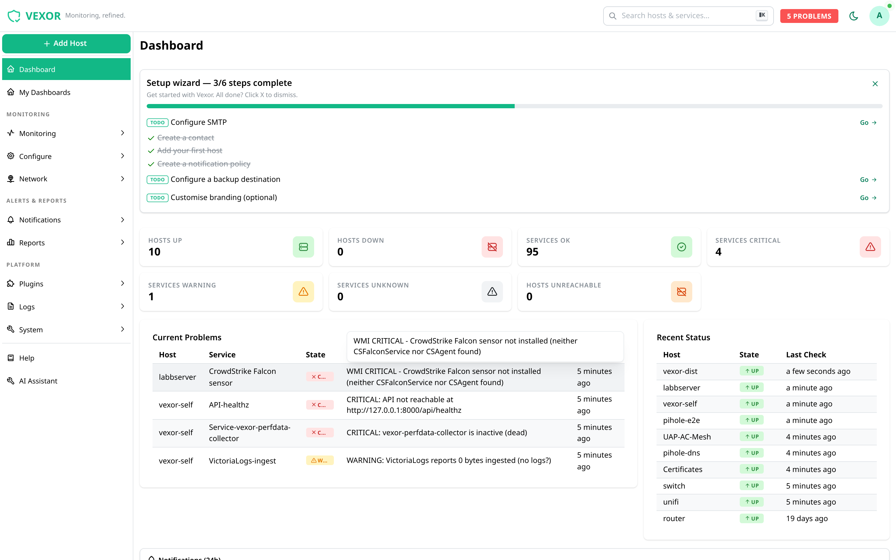
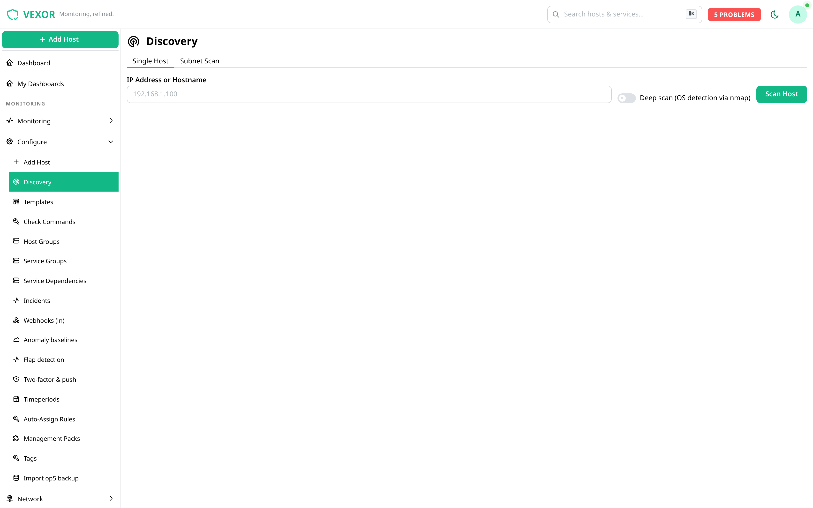
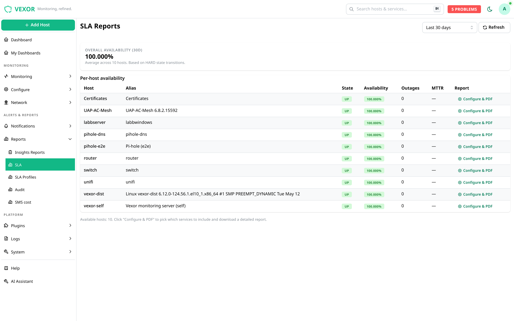
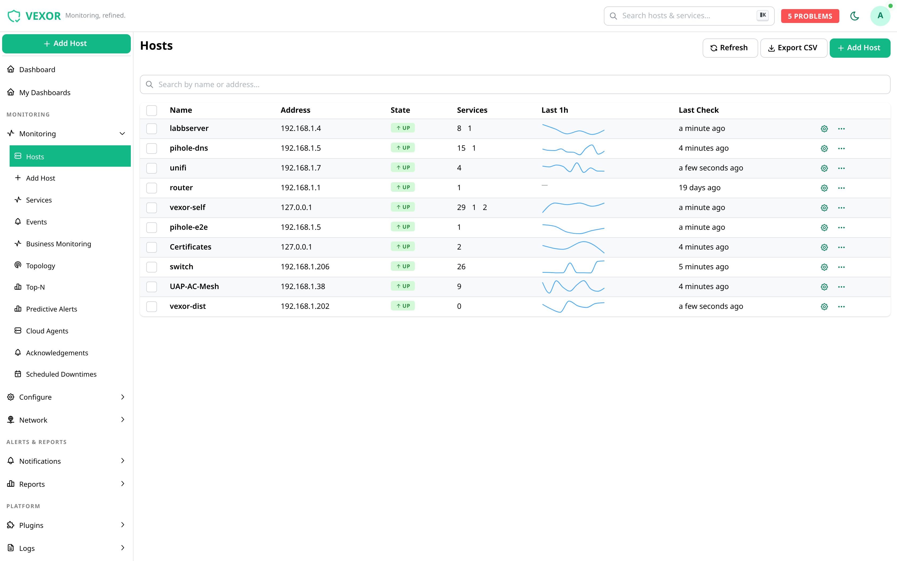
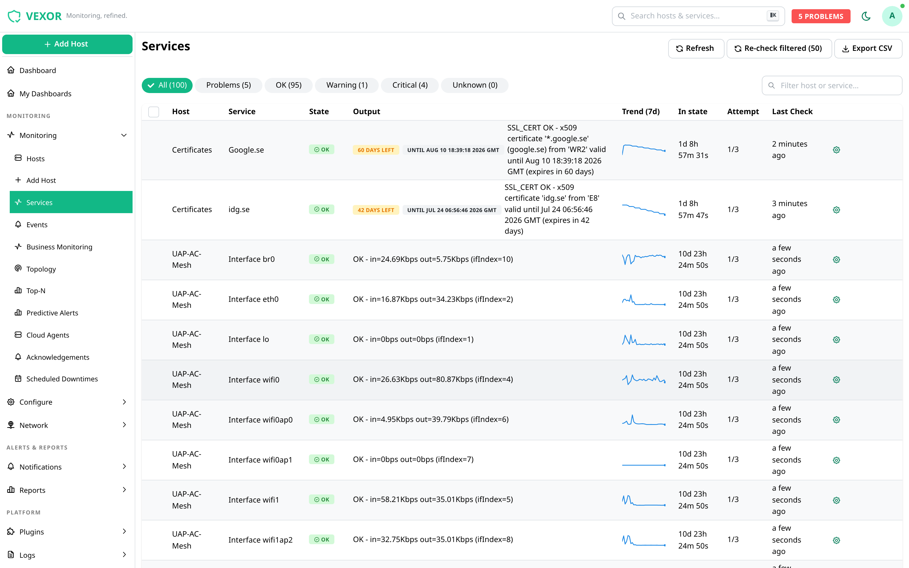
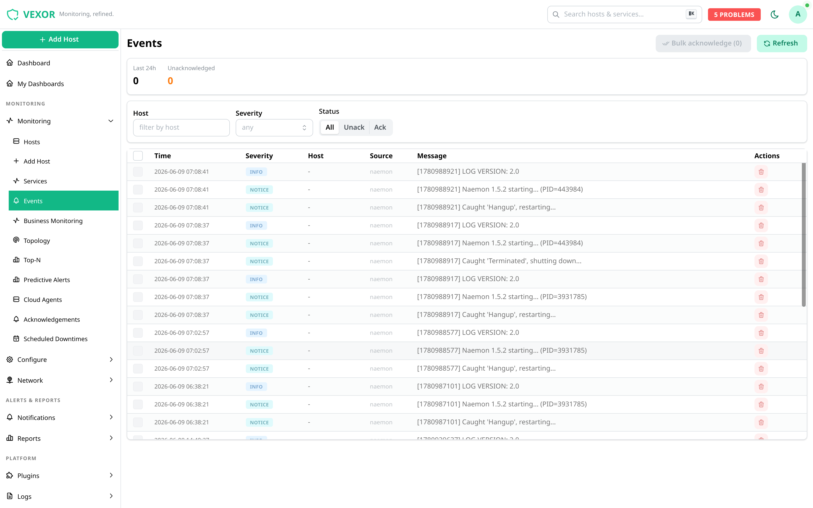

Deploy agents from the browser
Push the NSClient++ (Windows) or NRPE (Linux) agent to a host from the UI — and bundle a few extra packages with it if you need to.
Vexor keeps an eye on your servers, network and services. Add a host and it scans for the obvious things; deploy an agent from the browser when you want deeper checks. It runs on your own hardware — your data stays with you.
Built on Naemon, with a new UI and API on top. Three commands on Rocky 10, or one Docker image anywhere. Or poke around the live demo — sign in with demo / demo, read-only, resets every hour.

The things it's actually good at today.
Push the NSClient++ (Windows) or NRPE (Linux) agent to a host from the UI — and bundle a few extra packages with it if you need to.
Type an address and Vexor probes for ping, SSH, RDP, FTP, HTTP and other common services, so you start with a sensible baseline instead of a blank page.
If a host already has an agent, Vexor notices and offers the deeper checks — CPU, memory, disk, services — as boxes you tick.
Reports built from the monitoring you're already doing — uptime per host and service, no exporting to a spreadsheet.
Time-series data for the metrics you collect, so trends are easy to spot before they turn into a 2am phone call.
Authentication goes through Keycloak / OIDC, so you can plug in your existing LDAP or Active Directory rather than a separate user list.
The whole flow, start to finish.
An IP or hostname is the entire form.
It probes common services and suggests a baseline of checks to turn on.
Roll out an agent for deeper checks, then follow health, graphs and SLAs.
Real screenshots from a live install. Click to enlarge.





Two ways to run it. Pick a tab, copy, paste. Every install ships a free trial license — no sign-up.
On a fresh Rocky Linux 10 (or RHEL 10-compatible) server, run as root:
# 1 — add the Vexor repo (also pulls in EPEL, CRB and the GPG keys)
dnf install -y https://repo.vexormon.com/vexor-release-latest-el$(rpm -E %rhel).rpm
# 2 — install the full server (api, ui, naemon, keycloak, db, graphs…)
dnf install -y vexor-server
# 3 — first-run setup (databases, passwords, services, firewall)
vexor-setupThat's it — three commands, no manual repo or dependency wrangling. Supported on x86_64 Rocky / AlmaLinux / RHEL / Oracle Linux 10. Full notes & minimal install →
Prefer Docker, or running on Ubuntu/Debian? The all-in-one image runs the same stack:
# clone and start
git clone https://github.com/sayonarase/vexor-docker
cd vexor-docker
cp .env.example .env # set VEXOR_PUBLIC_URL to how you'll reach it
docker compose up -d
# grab the initial admin credentials (written on first boot)
docker compose exec vexor cat /etc/vexor/.initial-adminThen open https://<host>/. Image: ghcr.io/sayonarase/vexor:latest. Compose file & caveats →
Vexor is a one-person project in active development. Every install gets a free trial license with the full feature set, valid until May 2028, so there's time to actually live with it. If you run servers and try it, I'd like to hear how it goes — bug reports and rough edges included.
Email me / ask a question